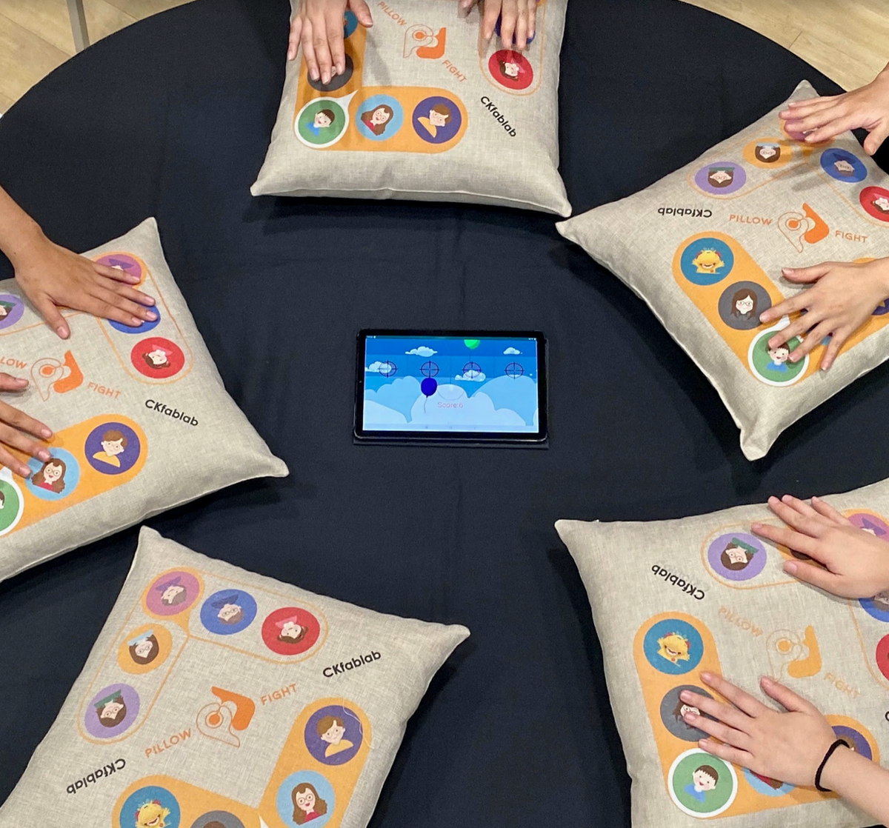
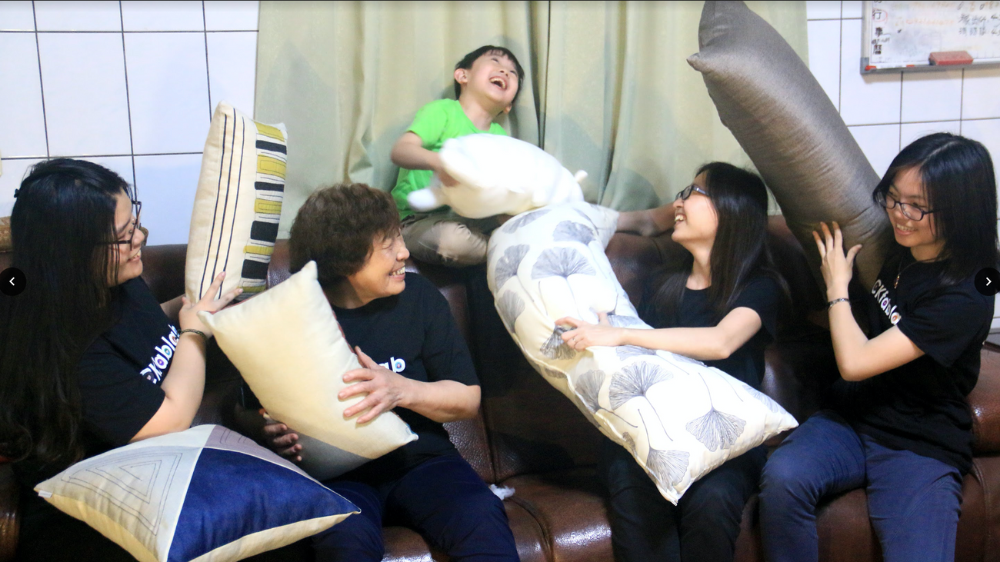
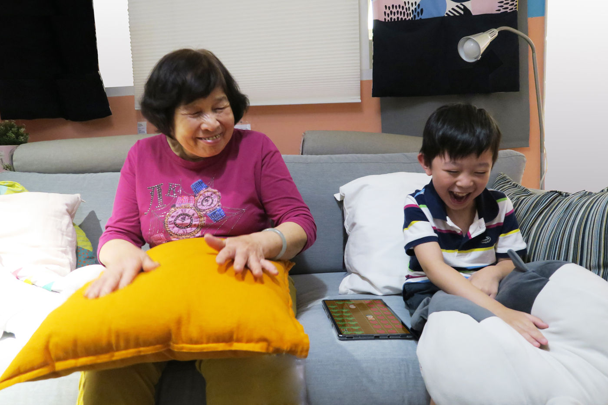
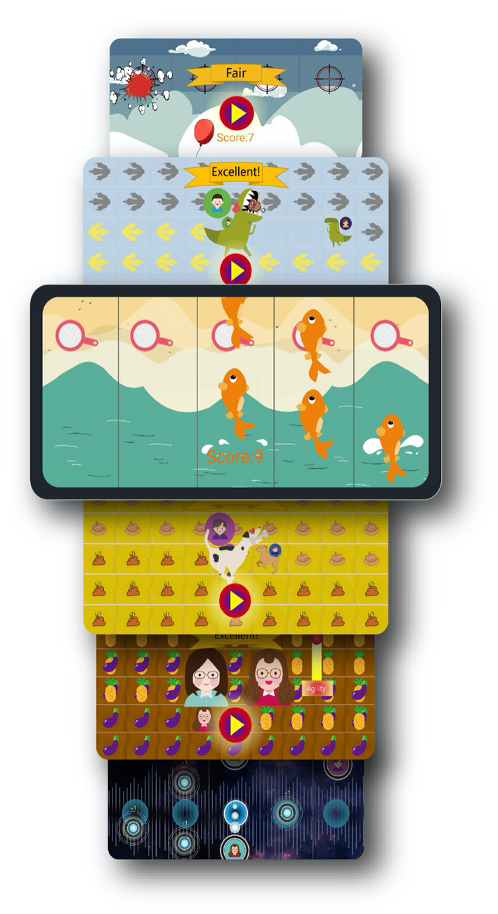

Experience it together, remember the joy — the pillow’s comforting sense of security carries warmth, and laughter in the game holds shared, happy memories.一同體驗、憶起歡樂—用抱枕帶來的安全感傳遞溫暖，用遊戲中的歡笑聲乘載共同的美好回憶。
Designed for grandparents and grandchildren to play together, it is a lively, easy-to-play video game for both children and elders. Built on behavioural “adaptivity,” technology is hidden inside everyday objects, with controls anyone can pick up regardless of age.本設計以祖孫共玩為目標，發展一套孩童及長輩都容易操作的生動有趣電玩遊戲。設計以行為「適應性」為主軸，將科技隱藏於生活物件中，著重於不分年紀都能適應的遊戲操作行為。
Real users — elders and children — took part throughout the design. Working from their perspective, through repeated iteration, problem-finding and reflective feedback, the controls were refined into something elders can pick up with ease.這款遊戲加入了真實使用者（長者與孩童）的參與，從他們的角度出發，在不斷修正、拋出問題與反思回饋後，逐步打磨出長者也能輕鬆上手的操作。
